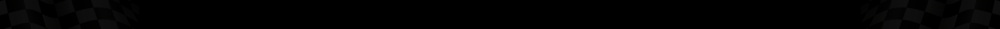

APRILIA
Aprilia została założona zaraz po II WŚ przez Cavaliere Alberto Beggio w Noale, należącym do włoskiej prowincji Wenecja. Początkowo fabryka zajmowała się produkcją rowerów, aż do 1968 kiedy to syn Alberta, Ivano Beggio razem z kilkunastoma współpracownikami skonstruował pierwszy w historii firmy motorower o pojemności 50 cm³. Pierwsze motorowery produkowane przez Aprilię nosiły nazwy Colibri i Daniela oraz produkowany od 1970 roku crossowy model Scarabeo. W 1974 powstał pierwszy cross z prawdziwego zdarzenia, którego prowadził Maurizio Sgarzani w kategorii kadetów. W 1977 roku Ivan Alborghetti z Mediolanu został motocrossowym mistrzem Włoch w klasach 125 cm³ i 250 cm³ jeżdżąc na maszynach Aprillii. W 1978 z 3 wygranymi wyścigami na koncie uplasował się na 6. pozycji Mistrzostw Świata w klasie 125 cm³.
